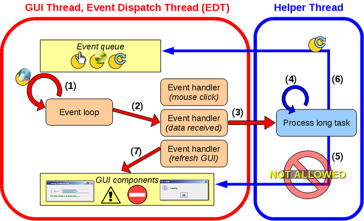

Parallel Task
Version
0.9, May 2010
- 1. Motivation and Background
- 2. Parallel Task
- 2.1 Model overview
- 2.2 Example 1: Hello, World!
- 2.3 Example 2: Let's get surfing!
- 2.4 Example 3: Building a house (GUI)
- 3. Downloads and further information
- 4. People
1. Motivation and Background
1.1 Why multi-threading?
There
are two reasons why programmers may wish to multi-thread their desktop
applications: to improve performance, and to improve responsiveness.
ParaTask allows programmers to easily achieve both these goals.
Improving performance
Parallel computing has arrived to mainstream desktop systems in the form of multi-core processors because of the difficulties in maintaining improvements in uni-processor clock-speed. Unfortunately, users will not automatically witness any performance improvements unless their applications are parallelised. Parallel computing is however notoriously difficult, especially in terms of program correctness and high performance.
Improving responsiveness
Multi-threading, however, is also necessary even when desktop applications are to be run on a uni-processor. How many times have you experienced unresponsive applications where buttons don't respond no matter how many times you click? Then you drag the application window around and it stays grey until it finishes its current job? Such frustrating applications are not multi-threaded: there is only one thread doing all the work.
Improving performance
Parallel computing has arrived to mainstream desktop systems in the form of multi-core processors because of the difficulties in maintaining improvements in uni-processor clock-speed. Unfortunately, users will not automatically witness any performance improvements unless their applications are parallelised. Parallel computing is however notoriously difficult, especially in terms of program correctness and high performance.
Improving responsiveness
Multi-threading, however, is also necessary even when desktop applications are to be run on a uni-processor. How many times have you experienced unresponsive applications where buttons don't respond no matter how many times you click? Then you drag the application window around and it stays grey until it finishes its current job? Such frustrating applications are not multi-threaded: there is only one thread doing all the work.
1.2 Graphical user interfaces
Desktop applications allow
users to interact through a graphical user interface (GUI). The
application displays a range of visual components, some acting as a
form of input (e.g. buttons, text fields) while others display
application status (e.g. labels, progress bars). Such an application
would be based on the event-driven paradigm, where the program's
execution flow is determined by events (e.g. mouse clicks, messages from other threads).
The figure below shows the
structure of a typical multi-threaded GUI
application, which is traditionally developed using a GUI toolkit and
threading library. Two threads are in play. The most important thread,
the GUI thread (also known as event dispatch thread in Java), is solely
responsible for accessing the GUI components and responding to events.

An important aspect of these applications is the event loop, waiting for events to arrive (1). The events are then dispatched to the appropriate event handler to take the appropriate action (2). Many toolkits are available for programmers to ease the development of these event-based applications. The toolkits provide many graphical components as well as the event loop and event handling. Generally, programmers only need to specify the logic of event handlers (e.g. the response to a certain button being clicked).
Programmers must ensure that these event handlers are short so that control returns to the event loop. Otherwise, events will backlog and the application appears unresponsive (for example, GUI applications appear to “freeze” when the GUI does not refresh). For this reason, all time-consuming tasks must be dispatched to a helper thread (3) to allow the GUI thread to return to the event loop (1) to respond to other events. In the meantime, the helper thread executes the computation (4). Notice that the purpose of multi-threading so far has been solely to improve the application's responsiveness (rather than improve performance through parallelism).
Combined with the performance
versus programmability trade-off toolkit implementers face, GUI
toolkits are typically single-threaded). Only one dedicated thread is
allowed to access the GUI components: the GUI thread. In particular,
this means the helper thread (or any other thread for that matter) must not access the GUI components
directly (5). Instead, the helper thread posts an event (6) to the GUI thread, which in turn updates the GUI (1), (2), (7).
In developing multi-threaded applications to improve performance and/or responsiveness, programmers must adhere to the above rules. ParaTask allows programmers to develop interactive and performant multi-threaded applications by simplifying the parallel development process.
In developing multi-threaded applications to improve performance and/or responsiveness, programmers must adhere to the above rules. ParaTask allows programmers to develop interactive and performant multi-threaded applications by simplifying the parallel development process.
2. Parallel Task
2.1 Model overview
In analysing threading and
concurrent programs, various task concepts can be identified. Some
tasks have short runtimes and are computationally intensive; other
tasks have long runtimes and are interactive (i.e. react to
input/output). Some tasks execute once, while others need to be
executed multiple times. Different task types are therefore supported
by ParaTask, all unified in a single model:
• One-off tasks:
These tasks are CPU-bound computations. When invoked, a single instance
of the task is enqueued to be executed from start to finish by any of
the processors.
• Multi-tasks: These are multiple tasks for data parallelism, hence they map to different processors.
• Interactive tasks:
These tasks are I/O-bound computations, for example background tasks
waiting for events (e.g. mouse or key press). They should not be
defined as one-off tasks since they would cause a backlog of
ready-to-execute tasks. Many tasks are perfect candidates for
interactive tasks, for example web-based tasks. These tasks correspond
to classical threads.
2.2 Example 1: Hello, World!
No
introduction would be
complete without the notorious Hello, World! Here, we illustrate
examples of one-off tasks, multi-tasks and interactive tasks (download
example here). We will explain the code in snippets. The first method,
hello(), is straightforward:
public static void hello(String name) {
System.out.println("Hello from "+name);
}
public static void hello(String name) {
System.out.println("Hello from "+name);
}
The next methods of interest
are task_hello(), multi_hello() and interactive_hello(). These
correspond to one-off tasks, multi-tasks and interactive tasks
respectively:
TASK public static void task_hello() {
hello("Task");
}
TASK(*) public static void multi_hello() {
hello("Multi-Task [subtask "+CurrentTask.relativeID()+"]");
}
INTERACTIVE_TASK public static void interactive_hello() {
hello("Interactive Task");
}
The first thing you'll notice is an excellent example of code reuse; here, these methods reuse the sequential code by calling hello(). The second thing to notice is that these 3 methods are almost identical; the only difference is the slight change in the TASK modifier. Now it is time to invoke these methods!
System.out.println("(1)");
hello("Sequential");
System.out.println("(2)");
TaskID id1 = task_hello();
System.out.println("(3)");
TaskIDGroup id2 = multi_hello();
System.out.println("(4)");
TaskID id3 = interactive_hello();
System.out.println("(5)");
Recall that hello() is a standard sequential method. The 3 task methods however have been annotated with a variant of the TASK keyword. Consequently, these 3 methods will now return a TaskID corresponding to a respective invocation of that task. Since execution of a task is asynchronous to it's caller, we need to synchronise with the task completion. One approach is to place the TaskIDs of these tasks inside a group and wait for the group to finish:
TaskIDGroup g = new TaskIDGroup(3);
g.add(id1);
g.add(id2);
g.add(id3);
System.out.println("** Going to wait for the tasks...");
g.waitTillFinished();
System.out.println("** Done! All tasks have now completed.");
Here is one possible output produced by this program:
The important thing to notice is how the tasks executed asynchronously with their caller. This is obvious since the statement following the task's invocation (i.e. "(2)", .. "(5)") were all executed before the actual task computation of the respective task.
From this example, it may seem unclear what the difference is between interactive and one-off tasks. This is because the difference between the 2 did not have an effect in this particular example (but will be illustrated in the following example). The difference with the multi-task is more obvious: the task is executed multiple times.
TASK public static void task_hello() {
hello("Task");
}
TASK(*) public static void multi_hello() {
hello("Multi-Task [subtask "+CurrentTask.relativeID()+"]");
}
INTERACTIVE_TASK public static void interactive_hello() {
hello("Interactive Task");
}
The first thing you'll notice is an excellent example of code reuse; here, these methods reuse the sequential code by calling hello(). The second thing to notice is that these 3 methods are almost identical; the only difference is the slight change in the TASK modifier. Now it is time to invoke these methods!
System.out.println("(1)");
hello("Sequential");
System.out.println("(2)");
TaskID id1 = task_hello();
System.out.println("(3)");
TaskIDGroup id2 = multi_hello();
System.out.println("(4)");
TaskID id3 = interactive_hello();
System.out.println("(5)");
Recall that hello() is a standard sequential method. The 3 task methods however have been annotated with a variant of the TASK keyword. Consequently, these 3 methods will now return a TaskID corresponding to a respective invocation of that task. Since execution of a task is asynchronous to it's caller, we need to synchronise with the task completion. One approach is to place the TaskIDs of these tasks inside a group and wait for the group to finish:
TaskIDGroup g = new TaskIDGroup(3);
g.add(id1);
g.add(id2);
g.add(id3);
System.out.println("** Going to wait for the tasks...");
g.waitTillFinished();
System.out.println("** Done! All tasks have now completed.");
Here is one possible output produced by this program:
(1)
Hello from Sequential
(2)
(3)
Hello from Task
(4)
(5)
** Going to wait for the tasks to execute...
Hello from Interactive Task
Hello from Multi-Task [subtask 0]
Hello from Multi-Task [subtask 1]
** Done! All tasks have now completed.
Hello from Sequential
(2)
(3)
Hello from Task
(4)
(5)
** Going to wait for the tasks to execute...
Hello from Interactive Task
Hello from Multi-Task [subtask 0]
Hello from Multi-Task [subtask 1]
** Done! All tasks have now completed.
The important thing to notice is how the tasks executed asynchronously with their caller. This is obvious since the statement following the task's invocation (i.e. "(2)", .. "(5)") were all executed before the actual task computation of the respective task.
From this example, it may seem unclear what the difference is between interactive and one-off tasks. This is because the difference between the 2 did not have an effect in this particular example (but will be illustrated in the following example). The difference with the multi-task is more obvious: the task is executed multiple times.
2.3 Example 2: Let's get surfing!
In this example, we will access the web to illustrate the difference between the
task types (download
example here).
Therefore, this example requires you are connected to a network in
order to run! This example illustrates the difference between
sequential methods, one-off tasks, multi-tasks and interactive tasks by
running the same set of computations under each of the cases. First,
the sequential code for one computation:
First, we create a collection to store all the addresses we wish to access:
...
urls.add("http://en.wikipedia.org/wiki/Tongariro_National_Park");
Sequential:
Below is the sequential code:
And here is an example of the output for the sequential code:public static void webAccess(String address) {
...
// count number of links
...
// print the time for this computation
...
}
...
// count number of links
...
// print the time for this computation
...
}
First, we create a collection to store all the addresses we wish to access:
ConcurrentLinkedQueue<String> urls =
urls.add("http://en.wikipedia.org/wiki/New_Zealand");new ConcurrentLinkedQueue<String>();
...
urls.add("http://en.wikipedia.org/wiki/Tongariro_National_Park");
Sequential:
Below is the sequential code:
for(String s: urls) {
webAccess(s);
}
System.out.println("Total time: "+time+" seconds.");
webAccess(s);
}
System.out.println("Total time: "+time+" seconds.");
830 links for 'New_Zealand' [11.921 seconds, thread 1]
509 links for 'Auckland' [0.415 seconds, thread 1]
202 links for 'Rotorua' [0.209 seconds, thread 1]
127 links for 'Milford_Sound' [0.21 seconds, thread 1]
524 links for 'Christchurch' [0.613 seconds, thread 1]
467 links for 'Dunedin' [1.971 seconds, thread 1]
152 links for 'Queenstown,_New_Zealand' [0.402 seconds, thread 1]
149 links for 'Tongariro_National_Park' [0.407 seconds, thread 1]
Total time: 16.159 seconds.
509 links for 'Auckland' [0.415 seconds, thread 1]
202 links for 'Rotorua' [0.209 seconds, thread 1]
127 links for 'Milford_Sound' [0.21 seconds, thread 1]
524 links for 'Christchurch' [0.613 seconds, thread 1]
467 links for 'Dunedin' [1.971 seconds, thread 1]
152 links for 'Queenstown,_New_Zealand' [0.402 seconds, thread 1]
149 links for 'Tongariro_National_Park' [0.407 seconds, thread 1]
Total time: 16.159 seconds.
The
actual times of the
computations is not important (since the execution times vary depending
on the network). What is important is the relationship between the
individual times and the total time. In this case, all the computations
were executed sequentially by the same thread (thread 1), therefore the
total time is the sum of the individual times.In the case of a GUI
application, this means that the application would remain "frozen" for
16 seconds!
One-off tasks:
The first step involves defining the task. To promote code-reuse, we implement this as a wrapper around the sequential method since webAccess() is thread-safe independent code:
Again, the actual individual times are not important. What we are interested in now is that the tasks were executed by a team of 2 worker threads (thread 7 and thread 8). As a result, the total time is a sum of the longest sum of times that one of the worker threads encounters. In this case, the 3 tasks executed by thread 8 took a total of 6.9 seconds.
For most computations, one-off tasks will be the right solution. But in this particular application, one-off tasks are probably not the best solution. Even though one-off tasks have allowed us to reduce the total time (since multiple worker threads are sharing the workload), we notice that webAccess() is not compute-intensive. The better solution would be interactive tasks (see below)!
Multi-tasks:
Multi-tasks are essentially one-off tasks, except they are executed multiple times! In particular, multi-tasks are still shared amongst a fixed number of worker threads. Below is a multi-task solution:
String s = null;
while ((s = queue.poll()) != null)
webAccess(s);
}
The difference here is that the entire collection is passed to the multi-task. Since this task is executed multiple times, each subtask will remove (from the concurrent collection) a url to access. The advantage of multi-tasks is that subtasks are automatically placed in a group and subtasks have group awareness (e.g. they could use a barrier, or inquire about their relative position within the group, etc). Executing the multi-task is easy:
TaskIDGroup g = webAccessMulti(urls);
g.waitTillFinished();
System.out.println("Total time: "+time+" seconds.");
In this application, the output from a multi-task would be the same as the one-off tasks above. This is because one-off tasks and multi-tasks are eventually all executed on a fixed number of worker threads. However, multi-tasks generally simplify the writing of data-parallel code (e.g. in this case, a TaskIDGroup is automatically returned containing all the individual TaskIDs).
Interactive tasks:
Although one-off tasks will be the most common and useful in ParaTask, they are not ideal for this particular example. This is because webAccess() is not compute-intensive. As such, the worker threads spend a lot of time waiting for result from the network. This is where interactive tasks are best suited: for computations that involve external input/output.
INTERACTIVE_TASK public static void webAccessInteractiveTask
}
Interactive tasks are invoked exactly like the one-off tasks above, except that the tasks are not queued to be shared by the existing threadpool. Instead, each of the tasks is mapped to its own thread. This is the behaviour we desire, since these computations are not compute intensive, we prefer to have extra threads if it means the tasks are truly all executed concurrently. Having this distinction of interactive tasks will also help other compute-intensive tasks, since the worker threads will remain busy executing (as opposed to blocking waiting for input/output). Here is the result:
Notice how each of the tasks was executed by a different thread. Therefore, the total time is essentially the time of the longest task.
One-off tasks:
The first step involves defining the task. To promote code-reuse, we implement this as a wrapper around the sequential method since webAccess() is thread-safe independent code:
TASK public static void webAccessTask(String address) {
webAccess(address);
}
After invoking the tasks, we add the individual TaskIDs to a group and synchronise on the group:webAccess(address);
}
TaskIDGroup g = new TaskIDGroup(urls.size());
for(String s: urls) {
TaskID id = webAccessTask(s);
g.add(id);
}
g.waitTillFinished();
System.out.println("Total time: "+time+" seconds.");
And the output produced:for(String s: urls) {
TaskID id = webAccessTask(s);
g.add(id);
}
g.waitTillFinished();
System.out.println("Total time: "+time+" seconds.");
509 links for 'Auckland' [1.682 seconds, thread 7]
202 links for 'Rotorua' [0.415 seconds, thread 7]
830 links for 'New_Zealand' [3.106 seconds, thread 8]
127 links for 'Milford_Sound' [0.21 seconds, thread 7]
524 links for 'Christchurch' [1.804 seconds, thread 8]
152 links for 'Queenstown,_New_Zealand' [2.024 seconds, thread 8]
467 links for 'Dunedin' [1.569 seconds, thread 7]
149 links for 'Tongariro_National_Park' [0.203 seconds, thread 7]
Total time: 6.994 seconds.
202 links for 'Rotorua' [0.415 seconds, thread 7]
830 links for 'New_Zealand' [3.106 seconds, thread 8]
127 links for 'Milford_Sound' [0.21 seconds, thread 7]
524 links for 'Christchurch' [1.804 seconds, thread 8]
152 links for 'Queenstown,_New_Zealand' [2.024 seconds, thread 8]
467 links for 'Dunedin' [1.569 seconds, thread 7]
149 links for 'Tongariro_National_Park' [0.203 seconds, thread 7]
Total time: 6.994 seconds.
Again, the actual individual times are not important. What we are interested in now is that the tasks were executed by a team of 2 worker threads (thread 7 and thread 8). As a result, the total time is a sum of the longest sum of times that one of the worker threads encounters. In this case, the 3 tasks executed by thread 8 took a total of 6.9 seconds.
For most computations, one-off tasks will be the right solution. But in this particular application, one-off tasks are probably not the best solution. Even though one-off tasks have allowed us to reduce the total time (since multiple worker threads are sharing the workload), we notice that webAccess() is not compute-intensive. The better solution would be interactive tasks (see below)!
Multi-tasks:
Multi-tasks are essentially one-off tasks, except they are executed multiple times! In particular, multi-tasks are still shared amongst a fixed number of worker threads. Below is a multi-task solution:
TASK(*) public static void webAccessMulti(
ConcurrentLinkedQueue<String> queue) {while ((s = queue.poll()) != null)
webAccess(s);
}
The difference here is that the entire collection is passed to the multi-task. Since this task is executed multiple times, each subtask will remove (from the concurrent collection) a url to access. The advantage of multi-tasks is that subtasks are automatically placed in a group and subtasks have group awareness (e.g. they could use a barrier, or inquire about their relative position within the group, etc). Executing the multi-task is easy:
TaskIDGroup g = webAccessMulti(urls);
g.waitTillFinished();
System.out.println("Total time: "+time+" seconds.");
In this application, the output from a multi-task would be the same as the one-off tasks above. This is because one-off tasks and multi-tasks are eventually all executed on a fixed number of worker threads. However, multi-tasks generally simplify the writing of data-parallel code (e.g. in this case, a TaskIDGroup is automatically returned containing all the individual TaskIDs).
Interactive tasks:
Although one-off tasks will be the most common and useful in ParaTask, they are not ideal for this particular example. This is because webAccess() is not compute-intensive. As such, the worker threads spend a lot of time waiting for result from the network. This is where interactive tasks are best suited: for computations that involve external input/output.
INTERACTIVE_TASK public static void webAccessInteractiveTask
(String address) {
webAccess(address);}
Interactive tasks are invoked exactly like the one-off tasks above, except that the tasks are not queued to be shared by the existing threadpool. Instead, each of the tasks is mapped to its own thread. This is the behaviour we desire, since these computations are not compute intensive, we prefer to have extra threads if it means the tasks are truly all executed concurrently. Having this distinction of interactive tasks will also help other compute-intensive tasks, since the worker threads will remain busy executing (as opposed to blocking waiting for input/output). Here is the result:
127 links for 'Milford_Sound' [1.069 seconds, thread 13]
149 links for 'Tongariro_National_Park' [1.26 seconds, thread 17]
152 links for 'Queenstown,_New_Zealand' [1.263 seconds, thread 16]
202 links for 'Rotorua' [1.437 seconds, thread 11]
524 links for 'Christchurch' [1.694 seconds, thread 14]
467 links for 'Dunedin' [1.734 seconds, thread 15]
509 links for 'Auckland' [1.917 seconds, thread 10]
830 links for 'New_Zealand' [2.134 seconds, thread 9]
Total time: 2.16 seconds.
149 links for 'Tongariro_National_Park' [1.26 seconds, thread 17]
152 links for 'Queenstown,_New_Zealand' [1.263 seconds, thread 16]
202 links for 'Rotorua' [1.437 seconds, thread 11]
524 links for 'Christchurch' [1.694 seconds, thread 14]
467 links for 'Dunedin' [1.734 seconds, thread 15]
509 links for 'Auckland' [1.917 seconds, thread 10]
830 links for 'New_Zealand' [2.134 seconds, thread 9]
Total time: 2.16 seconds.
Notice how each of the tasks was executed by a different thread. Therefore, the total time is essentially the time of the longest task.
2.4 Example 3: Building a house (GUI)
The final example is that of a
GUI application. The motivation here is to illustrate the problem
discussed above where the application appears to "freeze" and become
unresponsive when it is not multi-threaded. Before having a look at the
code, download and run the application (> java -cp house.jar:PTRuntime.jar house.Build). The source code can also be downloaded here.
On the left side, the user is able to select a colour for the roof and walls of a house being built. The "build" button actually builds the house, and the user is able to "clear" the screen to delete the graphic. At the bottom of the window, the user is able to switch the application mode (parallel mode or sequential mode). If the house is built too quickly,select a higher level of computation from the menu. When running the application in sequential mode, you will notice how it freezes and cannot select any of the GUI components. In the parallel mode however, the graphics even updates as the house updates for a much more appealing user experience.
Now we are ready to have a look at the interesting parts of this application, and see where ParaTask helps. When the user presses the build button, the application decides on the current mode. If the current mode is sequential, then the following code is executed:
The finishedBuilding() method refers to computations that will update the GUI after the house is built. If the current mode is parallel, then the following code is executed:
You will notice that the parallel code using ParaTask is very similar to the sequential code. One difference, of course, is that the buildTask() method called is a TASK rather than a standard sequential method. Because of the asynchronous nature of tasks, we need a way to specify that the finishedBuilding() method be invoked after the task completes. More specifically, the finishedBuilding() method must be invoked by the GUI thread (i.e. Java's event dispatch thread). This is what the notify clause assures. We specify that the finishedBuilding() method is to be executed by the same thread that enqueued the task (in this case, it is the EDT since we are inside the actionPerformed() method). This is what allows the EDT to return to the event loop and maintain a responsive application.
Nested parallelism and dependences
When the application is run in parallel mode, you will notice the house is being built in parallel (when using a multi-core system). From the above code, it seems we only have one task (buildTask()). In actual fact, the buildTask() task creates further tasks and waits for them to complete. However, these smaller parts of the house need to be developed using a particular order. Here is the relationship between these tasks:

On the left side, the user is able to select a colour for the roof and walls of a house being built. The "build" button actually builds the house, and the user is able to "clear" the screen to delete the graphic. At the bottom of the window, the user is able to switch the application mode (parallel mode or sequential mode). If the house is built too quickly,select a higher level of computation from the menu. When running the application in sequential mode, you will notice how it freezes and cannot select any of the GUI components. In the parallel mode however, the graphics even updates as the house updates for a much more appealing user experience.
Now we are ready to have a look at the interesting parts of this application, and see where ParaTask helps. When the user presses the build button, the application decides on the current mode. If the current mode is sequential, then the following code is executed:
houseApplet.build(colorWalls, colorRoof);
Build.this.finishedBuilding();
Build.this.finishedBuilding();
The finishedBuilding() method refers to computations that will update the GUI after the house is built. If the current mode is parallel, then the following code is executed:
TaskID id = houseApplet.buildTask(colorWalls, colorRoof)
notify(Build.this::finishedBuilding());
notify(Build.this::finishedBuilding());
You will notice that the parallel code using ParaTask is very similar to the sequential code. One difference, of course, is that the buildTask() method called is a TASK rather than a standard sequential method. Because of the asynchronous nature of tasks, we need a way to specify that the finishedBuilding() method be invoked after the task completes. More specifically, the finishedBuilding() method must be invoked by the GUI thread (i.e. Java's event dispatch thread). This is what the notify clause assures. We specify that the finishedBuilding() method is to be executed by the same thread that enqueued the task (in this case, it is the EDT since we are inside the actionPerformed() method). This is what allows the EDT to return to the event loop and maintain a responsive application.
Nested parallelism and dependences
When the application is run in parallel mode, you will notice the house is being built in parallel (when using a multi-core system). From the above code, it seems we only have one task (buildTask()). In actual fact, the buildTask() task creates further tasks and waits for them to complete. However, these smaller parts of the house need to be developed using a particular order. Here is the relationship between these tasks:
From this diagram, we see that
the foundation, walls, roof tiles and windows are modelled as
multi-tasks. The door and sale sign are standard one-off tasks. The
first stage of building the house is laying the foundation. Once the
foundation is complete, the walls may be constructed, and then the roof
tiles. Only after the roof is complete may the door and windows be
constructed. Finally, when all the house is completed, the sale sign is
erected. One possibility of defining these tasks is as follows:
Notice that each of these tasks possesses no knowledge of any other task. In other words, they are decoupled. This is an important software engineering principle, as it will minimises future code change if any of the tasks are modified or removed. However, we cannot simply just invoke all these tasks immediate one after another as this means the dependences might not be met (for example if the wall is executed before all the foundation tasks are completed). At the same time we don't want to block after invoking each set of tasks, as this might reduce the parallelism and also blocks the GUI thread. The solution is to use the dependsOn clause:
TaskID idFoundation = buildFoundation(foundationTiles);
TaskID idWalls = buildWalls(wallSides) dependsOn(idFoundation);
TaskID idRoof = buildRoofTiles(roofTiles) dependsOn(idWalls);
TaskID idDoor = buildDoor(door) dependsOn(idRoof);
TaskID idWindows = buildWindows(windows) dependsOn(idRoof);
TaskID idSign = buildSign(sign) dependsOn(idDoor, idWindows);
At the end of this set of 6 statements, the GUI thread is free to return to the event loop to process other application events. In the meantime, all the tasks have been enqueued. Each task is executed as soon as a worker thread is free, but only if it's dependences have been met. For example, none of the roof tasks will be executed until all the wall tasks have completed. Similarly, the final sign task will wait for both the door and windows to be completed.
Not only is the dependsOn clause intuitive and easy to use, but it also keeps the tasks decoupled from each other. Assume that another house is to be built, but it has different ordering constraints. For example, maybe the windows and doors are to be built before the roof completes, and the the sign may be placed earlier on. In this case, the programmer only needs to update the corresponding dependsOn clause. The user code of the tasks need not be modified! If the programmer was implementing dependences manually (e.g. using wait conditions from a threading library), then this would have required modification to the task code!
TASK(*) public void buildFoundation(ConcurrentLinkedQueue tiles) {
Tile t = null;
while ((t = tiles.poll()) != null) {
buildTile(t);
}
}
TASK(*) public void buildWalls(ConcurrentLinkedQueue sidings) {...}
TASK(*) public void buildRoofTiles(ConcurrentLinkedQueue tiles) {...}
TASK public void buildDoor(Door d) {...}
TASK(*) public void buildWindows(ConcurrentLinkedQueue windows) {...}
TASK public void buildSign(Sign s) {...}
Tile t = null;
while ((t = tiles.poll()) != null) {
buildTile(t);
}
}
TASK(*) public void buildWalls(ConcurrentLinkedQueue sidings) {...}
TASK(*) public void buildRoofTiles(ConcurrentLinkedQueue tiles) {...}
TASK public void buildDoor(Door d) {...}
TASK(*) public void buildWindows(ConcurrentLinkedQueue windows) {...}
TASK public void buildSign(Sign s) {...}
Notice that each of these tasks possesses no knowledge of any other task. In other words, they are decoupled. This is an important software engineering principle, as it will minimises future code change if any of the tasks are modified or removed. However, we cannot simply just invoke all these tasks immediate one after another as this means the dependences might not be met (for example if the wall is executed before all the foundation tasks are completed). At the same time we don't want to block after invoking each set of tasks, as this might reduce the parallelism and also blocks the GUI thread. The solution is to use the dependsOn clause:
TaskID idFoundation = buildFoundation(foundationTiles);
TaskID idWalls = buildWalls(wallSides) dependsOn(idFoundation);
TaskID idRoof = buildRoofTiles(roofTiles) dependsOn(idWalls);
TaskID idDoor = buildDoor(door) dependsOn(idRoof);
TaskID idWindows = buildWindows(windows) dependsOn(idRoof);
TaskID idSign = buildSign(sign) dependsOn(idDoor, idWindows);
At the end of this set of 6 statements, the GUI thread is free to return to the event loop to process other application events. In the meantime, all the tasks have been enqueued. Each task is executed as soon as a worker thread is free, but only if it's dependences have been met. For example, none of the roof tasks will be executed until all the wall tasks have completed. Similarly, the final sign task will wait for both the door and windows to be completed.
Not only is the dependsOn clause intuitive and easy to use, but it also keeps the tasks decoupled from each other. Assume that another house is to be built, but it has different ordering constraints. For example, maybe the windows and doors are to be built before the roof completes, and the the sign may be placed earlier on. In this case, the programmer only needs to update the corresponding dependsOn clause. The user code of the tasks need not be modified! If the programmer was implementing dependences manually (e.g. using wait conditions from a threading library), then this would have required modification to the task code!